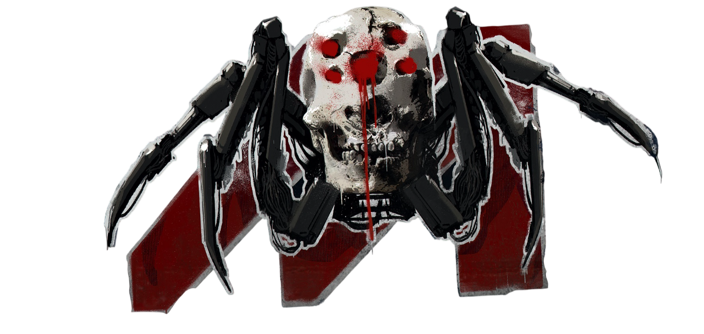

«Валентино» (англ. Valentinos), ранее (англ. Valentino's) — крупнейшая банда Найт-Сити,
в основном состоящая из латиноамериканцев, представители культуры чикано, главенствующая группировка в Глене,
Виста-дель-Рей и Уэллспрингс, Хейвуд.

«Мальстрём» — кровожадная банда отмороженных фанатиков, которых боится весь Найт-Сити. Они
буквально помешаны на Сети, поклоняются кибернетике и воспринимают своё человеческое тело исключительно как
заготовку, платформу для самых безумных и масштабных модификаций. Многие из членов банды балансируют на грани
киберпсихоза, если уже в него не скатились
«Тигриные когти» (англ. Tyger Claws) (яп. 虎鉤衆) — банда, состоящая в основном из азиатов,
которая пользуется методами организованных азиатских синдикатов, наподобие китайских триад и японских кланов
якудза, одна из крупнейших криминальных группировок Найт-Сити, главенствующая банда в Джапан-тауне и
Чартер-Хилле, Уэстбрук, Кабуки и Маленьком Китае, Уотсон.
«Животные» (англ. Animals) — банда агрессивных уличных бойцов без постоянной территории,
преимущественно сконцентрированных в южной Пасифике, которые работают вышибалами и телохранителями по всему
Найт-Сити.
«Шестая улица» (англ. 6th Street) — банда, военизированное объединение, состоящее из
ветеранов Четвёртой корпоративной и Объединяющей войны, военных в отставке, бывших представителей
корпоративных служб безопасности и гражданских, прошедших военную подготовку, главенствующая банда в Арройо и
Ранчо Коронадо, Санто-Доминго, Глене и Виста-дель-Рей, Хейвуд, а также Чартер-Хилле, Уэстбрук.
«Вудуисты» (англ. Voodoo Boys) — банда нетраннеров, состоящая из диаспоры гаитянских
креолов в Пасифике, главенствующая банда на побережье Пасифики. Загадочная банда из Пасифики, имеющая скверную
репутацию из-за своих способностей к нетраннингу и мистического флёра.
«Шельмы» (англ. The Mox), также (англ. Moxes) — банда секс-работников, сутенёров, фриков,
представителей сексуальных меньшинств, социальных изгоев, панков и анархистов, самая молодая банда города,
одна из главенствующих банд в Кабуки, Уотсон и в Уэстбруке, Найт-Сити.